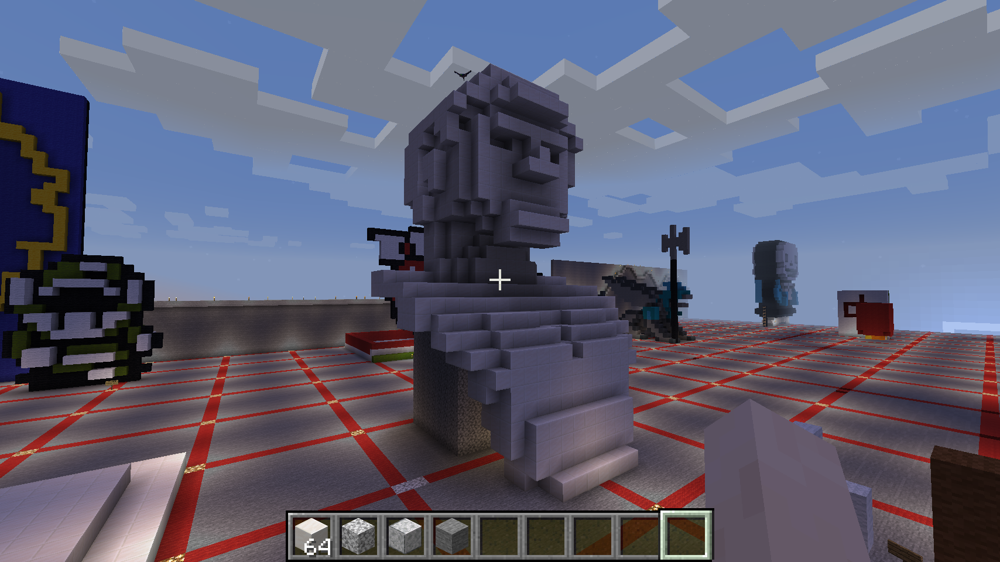
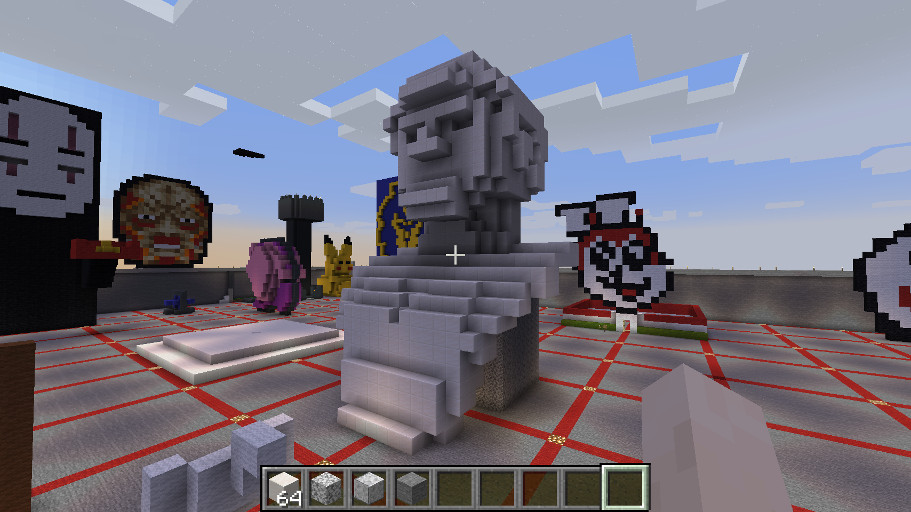
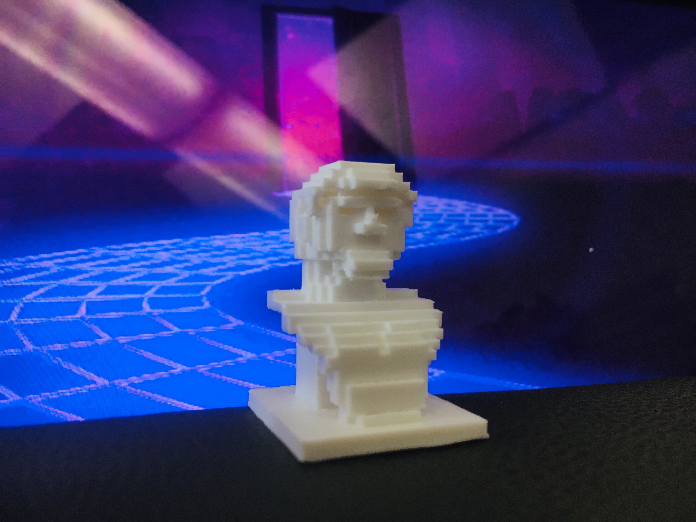

E N J O Y. Y O U R S E L F.



Diving into the world of the internet’s meme-filled culture, one may discover the wonders of vaporwave. Vaporwave is what some like to describe as “the internets music” that is filled with irony, essentially making it into a meme. The genre is a form of electronic music where the DJs takes parts of songs from the ’80s and ’90s, slows them down drastically, loops the part, and creates a new beat on top of it. The music takes influences from chillwave, smooth jazz, chopped and screwed, new-age, and pop. Though Vaporwave is not something one simply listens to, it is an entire experience. A certain type aesthetic is associated with Vaporwave as it consists of palm trees, 90’s computer graphics, cyans and magenta, 90’s infomercials, the Windows 95 logo, marble Greco-Roman statues… The list goes on. Overall, the sense of nostalgia and the contrasting musicality of today’s mainstream music pulled me in. I am inspired by the elements of what makes Vaporwave, specifically Greco-Roman statues. The heavy use of Greco-Roman bust and pillars within Vaporwave has been debated amongst fans. Some claim that it is a form of commentary on consumerism or dystopian realities, others say it stems from Vaporwave’s seapunk origins, while others say it is simply for the “aesthetics”. With Minecraft, I hope to not only bring an element of Vaporwave into the game but to also create a bridge between classical art and modern day technology.